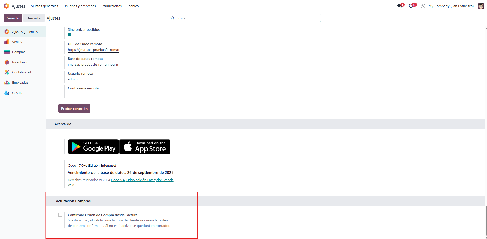
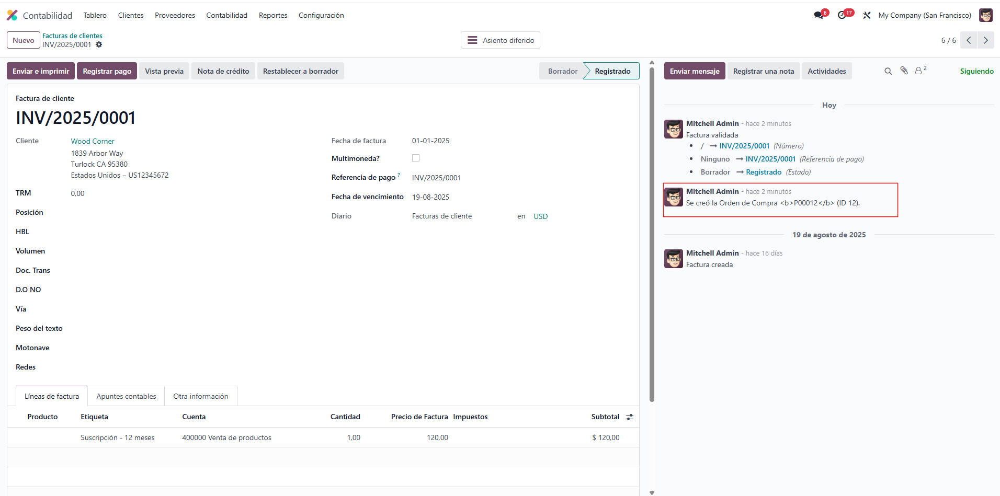

Este módulo crea una Orden de Compra a partir de cada factura de cliente validada. Además, deja rastro en el chatter tanto de la factura como de la orden de compra. Puedes decidir si la OC se confirma automáticamente o queda en borrador.
Activa o desactiva la confirmación automática desde Ajustes > General Settings.

Mensaje en el chatter de Odoo
